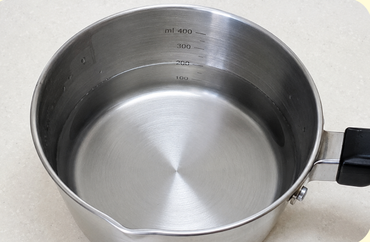
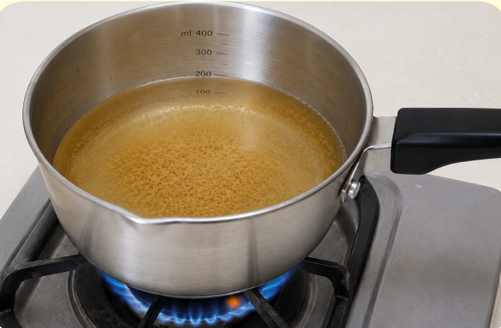
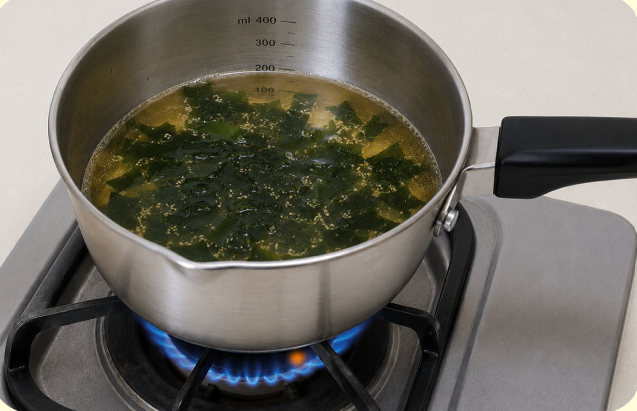
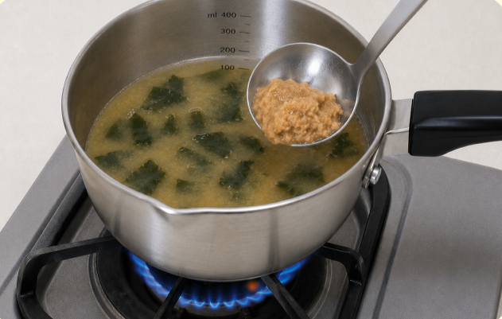
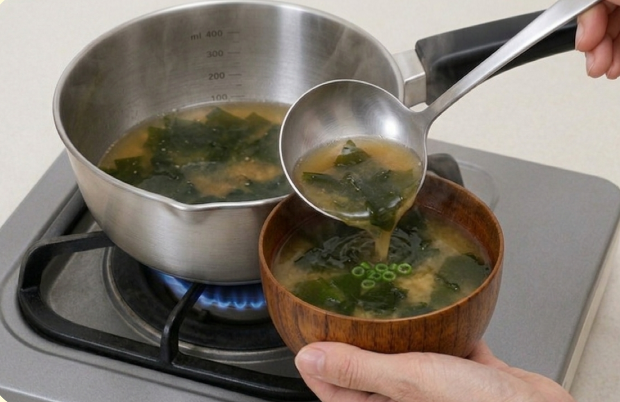

難易度２
★★☆
材料（１人分）
- ・水200ml
- ・味噌大さじ1
- ・顆粒和風だし小さじ1/2
- ・乾燥わかめひとつまみ（約2g）
必要な道具
- ・小鍋
- ・おたま
- ・計量スプーン
- ・お椀
注目ポイント
- 包丁を使わない
-
 火加減に注意
火加減に注意 -
 味見推奨
味見推奨
作り方
① 小鍋に水200mlを入れます。

② 顆粒和風だしを入れ、中火で温めます。沸騰するまで待ちましょう。

③ お湯が沸いたら乾燥わかめを入れます。わかめの入れすぎには注意しましょう。

④ 火を弱火にします。おたまに味噌をのせ、菜箸などで少しずつ溶かしながら鍋に入れます。

⑤ 味噌がしっかり溶けたら火を止め、お椀に注いで完成です。お好みで刻みねぎを乗せても良いでしょう。

調理のコツ
乾燥わかめを使うと、水で戻す必要がなくなるためおすすめです。
顆粒和風だしを使うと、出汁を取る必要がなくなるので手軽に作れます。
味が薄いと感じたら味噌を少しずつ足し、濃いと感じたらお湯を少し加えて調整しましょう。
困ったときは
Q. 味噌が溶けない・・・
A. お玉の上で箸やスプーンを使って少しずつ溶かすと、しっかり混ざってダマになりにくいです。
Q. 味が濃い・・・
A. お湯を少しずつ加えて味を調節しましょう。
Q. わかめを入れすぎた・・・
A. 乾燥わかめは水分を吸って大きくなります。次回は少なめから入れるのがおすすめです。